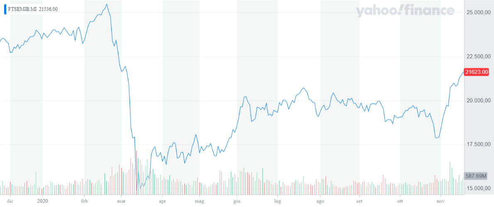
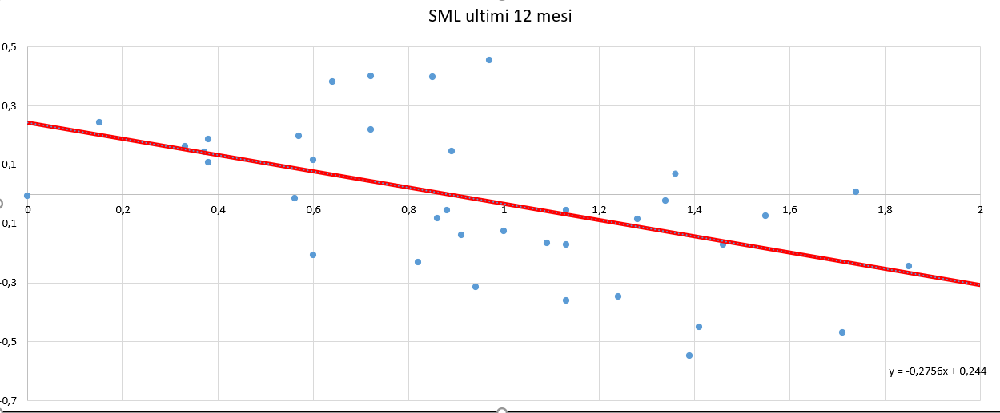

In un momento di diffusa volatilità e incertezza come quello appena affrontato, è importante per un investitore non perdere la lucidità. Infatti, la storia insegna come dopo un crollo vertiginoso dei prezzi in Borsa vi sia sempre stato un accentuato rialzo. In tale contesto abbiamo deciso di sviluppare empiricamente uno strumento appreso in università: la Security Market Line (SML).
In particolare, questa è una rappresentazione grafica nello spazio Beta (asse x) – Rendimento atteso (asse y), dove il Beta, dato dal rapporto tra la covarianza dei rendimenti della società e dei rendimenti dell’indice di mercato e la varianza dei rendimenti del mercato, misura la variazione di rendimento della singola società rispetto a quello del mercato in cui opera.
Nello specifico, la SML è una retta che parte dal punto con coordinate Beta uguale a zero e rendimento atteso pari al rendimento free risk passando poi per il punto con coordinate Beta uguale a uno e rendimento dell’indice di mercato. Questa assunzione è corretta in quanto un titolo privo di rischio, per definizione, è considerato privo di volatilità e quindi il Beta risulta uguale a zero. Il secondo punto è noto come portafoglio di mercato, il quale evidenzia il rendimento di tutte le aziende operanti nel mercato, ma si utilizza come proxy l’indice di Borsa per evidenti impossibilità di calcolo. In questo punto il Beta è pari a uno, perché l’indice di Borsa replica perfettamente l’andamento del portafoglio di mercato preso in considerazione.
Dal punto di vista pratico un titolo con Beta uguale a due significa che se il mercato portasse un rendimento pari a +2%, il titolo conseguirebbe un +4%, mentre con un Beta pari a 0.5 se la Borsa aumentasse del 4% il titolo aumenterebbe “solo” del 2%. Si può quindi comprendere come al crescere del Beta siano amplificate le fluttuazioni, distinguendo così titoli rischiosi e difensivi.
Figura 1: Andamento 1 anno FTSE MIB, immagine da Yahoo Finance
La nostra analisi si concentra sui titoli quotati sull’indice principale italiano, il FTSE MIB, su un orizzonte temporale che si estende dal 21 novembre 2019 fino al 20 novembre 2020.
In primo luogo, abbiamo calcolato il rendimento effettivo osservato nel corso dell’anno, ossia l’effettivo guadagno ottenuto dall’investitore, originato dalla somma del dividend yield (dato dal rapporto tra dividendo e prezzo) e dalla percentuale di capital gain calcolato come variazione percentuale in aumento o diminuzione del prezzo del titolo.
Avendo svolto un’analisi retrospettiva e non previsionale, abbiamo considerato il rendimento effettivo e non quello atteso. Non avevamo quindi la necessità di modelli previsionali (es: CAPM) per stabilire il livello di rendimento atteso ma abbiamo calcolato il rendimento effettivo dell’ultimo anno con il metodo esposto precedentemente.
Figura 2: Nostra elaborazione
Abbiamo visto come approcciarsi al concetto di “Beta” in periodi di alta incertezza del mercato e quindi anche di crisi. Grazie all’analisi grafica è evidente notare come negli ultimi 12 mesi, condizionati fortemente dall’emergenza Covid-19, sia stata efficace l’adozione di una strategia difensiva, la quale ha portato al conseguimento di risultati migliori di quelli che si sarebbero ottenuti con una strategia più propensa al rischio. Vogliamo allora concludere questa prima ricerca con una raccomandazione: nel momento in cui si investe bisogna porre attenzione anche a queste piccole statistiche che, benché all’apparenza possano apparire come dei semplici numeri, nascondono un significato da cui non si può prescindere per proteggersi correttamente dalla volatilità di mercato.
FTSE MIB Index – Yahoo Finanza